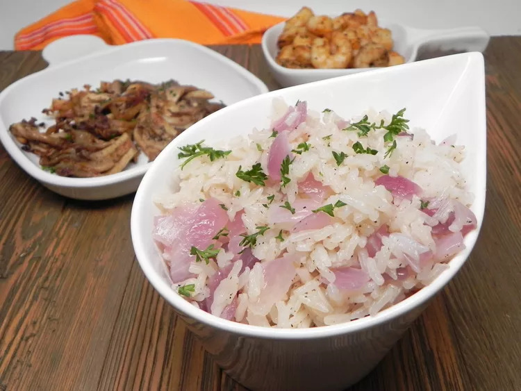

Onion Rice

Description
Simple and versatile rice side dish that everyone loves!
Ingredients
- 1 tablespoon vegetable oil
- 1 red onion, chopped
- 1 cup long-grain white rice
- 1 teaspoon ground black pepper
- 2 cups chicken broth
Steps
-
Heat the oil in a saucepan over medium heat. Stir in the onion, and cook
until almost tender. Stir in rice, and continue cooking until coated
with oil. When onion is tender and rice begins to brown lightly, season
with pepper, and pour in the broth. Bring to a boil. Reduce heat to low,
cover, and simmer 20 minutes.
<-Back